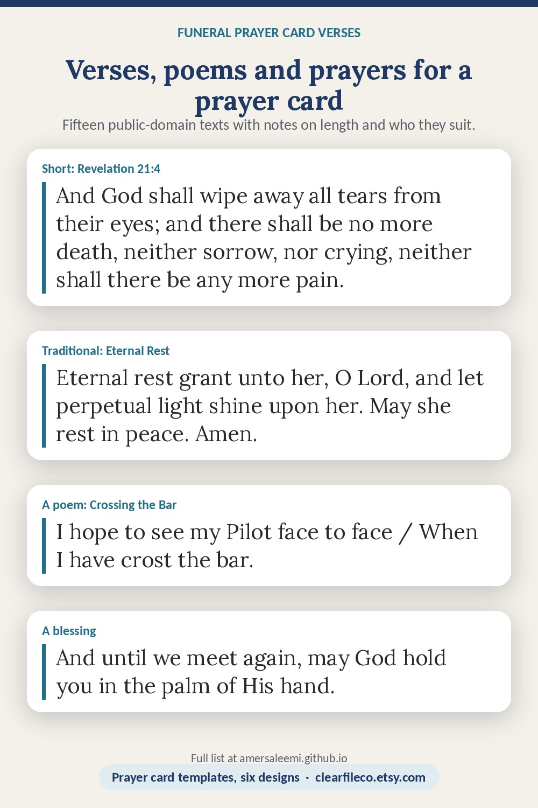

Verses, poems and prayers for a funeral prayer card
Everything below is public domain or written here, so it can go on a printed card. Each one has a note on who it suits and how much room it needs.
Psalm 23
The Lord is my shepherd; I shall not want. He maketh me to lie down in green pastures: he leadeth me beside the still waters. He restoreth my soul: he leadeth me in the paths of righteousness for his name's sake. Yea, though I walk through the valley of the shadow of death, I will fear no evil: for thou art with me; thy rod and thy staff they comfort me. Thou preparest a table before me in the presence of mine enemies: thou anointest my head with oil; my cup runneth over. Surely goodness and mercy shall follow me all the days of my life: and I will dwell in the house of the Lord for ever.
Eternal Rest
Eternal rest grant unto her, O Lord, and let perpetual light shine upon her. May she rest in peace. Amen.
May her soul and the souls of all the faithful departed, through the mercy of God, rest in peace. Amen.
An Irish Blessing
May the road rise up to meet you.
May the wind be always at your back.
May the sun shine warm upon your face,
and the rains fall soft upon your fields.
And until we meet again,
may God hold you in the palm of His hand.
Crossing the Bar
Sunset and evening star,
And one clear call for me!
And may there be no moaning of the bar,
When I put out to sea,
But such a tide as moving seems asleep,
Too full for sound and foam,
When that which drew from out the boundless deep
Turns again home.
Twilight and evening bell,
And after that the dark!
And may there be no sadness of farewell,
When I embark;
For tho' from out our bourne of Time and Place
The flood may bear me far,
I hope to see my Pilot face to face
When I have crost the bar.
Death Is Nothing at All
Death is nothing at all. It does not count. I have only slipped away into the next room. Nothing has happened. Everything remains exactly as it was. I am I, and you are you, and the old life that we lived so fondly together is untouched, unchanged. Whatever we were to each other, that we are still.
Call me by the old familiar name. Speak of me in the easy way which you always used. Put no difference into your tone. Wear no forced air of solemnity or sorrow. Laugh as we always laughed at the little jokes that we enjoyed together. Play, smile, think of me, pray for me.
Life means all that it ever meant. It is the same as it ever was. There is absolute and unbroken continuity. Why should I be out of mind because I am out of sight? I am but waiting for you, for an interval, somewhere very near, just round the corner. All is well.
Remember
Remember me when I am gone away,
Gone far away into the silent land;
When you can no more hold me by the hand,
Nor I half turn to go yet turning stay.
Remember me when no more day by day
You tell me of our future that you plann'd:
Only remember me; you understand
It will be late to counsel then or pray.
Yet if you should forget me for a while
And afterwards remember, do not grieve:
For if the darkness and corruption leave
A vestige of the thoughts that once I had,
Better by far you should forget and smile
Than that you should remember and be sad.
Requiem
Under the wide and starry sky,
Dig the grave and let me lie.
Glad did I live and gladly die,
And I laid me down with a will.
This be the verse you grave for me:
Here he lies where he longed to be;
Home is the sailor, home from sea,
And the hunter home from the hill.
Gone From My Sight
I am standing upon the seashore. A ship at my side spreads her white sails to the morning breeze and starts for the blue ocean. She is an object of beauty and strength, and I stand and watch her until at length she hangs like a speck of white cloud just where the sea and sky come down to mingle with each other.
Then someone at my side says, "There, she is gone!" Gone where? Gone from my sight, that is all. She is just as large in mast and hull and spar as she was when she left my side, and just as able to bear her load of living freight to the place of destination. Her diminished size is in me, not in her.
And just at the moment when someone at my side says, "There, she is gone!" there are other eyes watching her coming, and other voices ready to take up the glad shout, "Here she comes!" And that is dying.
John 14:1-3
Let not your heart be troubled: ye believe in God, believe also in me. In my Father's house are many mansions: if it were not so, I would have told you. I go to prepare a place for you. And if I go and prepare a place for you, I will come again, and receive you unto myself; that where I am, there ye may be also.
Revelation 21:4
And God shall wipe away all tears from their eyes; and there shall be no more death, neither sorrow, nor crying, neither shall there be any more pain: for the former things are passed away.
2 Timothy 4:7
I have fought a good fight, I have finished my course, I have kept the faith.
Ecclesiastes 3:1-4
To every thing there is a season, and a time to every purpose under the heaven: a time to be born, and a time to die; a time to plant, and a time to pluck up that which is planted; a time to kill, and a time to heal; a time to break down, and a time to build up; a time to weep, and a time to laugh; a time to mourn, and a time to dance.
Psalm 121:1-2, 7-8
I will lift up mine eyes unto the hills, from whence cometh my help. My help cometh from the Lord, which made heaven and earth. The Lord shall preserve thee from all evil: he shall preserve thy soul. The Lord shall preserve thy going out and thy coming in from this time forth, and even for evermore.
Romans 8:38-39
For I am persuaded, that neither death, nor life, nor angels, nor principalities, nor powers, nor things present, nor things to come, nor height, nor depth, nor any other creature, shall be able to separate us from the love of God, which is in Christ Jesus our Lord.
Forever Loved
You filled our days with quiet grace,
with open doors and gentle words,
the kitchen light, the steady hand,
the laughter that was always heard.
We carry you in all we do,
in every garden, every song;
and though we say goodbye today,
we hold you close our whole life long.
Choosing one
- Pick a length first: a 2.5 x 4.25 card holds about 60 words on the back (Eternal Rest, Revelation 21:4, the last stanza of Crossing the Bar); a 4 x 6 card holds about 120 (Psalm 23, the Irish Blessing, Requiem).
- Match the words to the person, not the occasion: a sailor gets Crossing the Bar, a gardener gets Ecclesiastes, a nurse gets 2 Timothy.
- Check the pronouns: Eternal Rest says "him" or "her"; the prayer card templates have both.
- Public-domain texts (the ones here) can go on a printed card with no permission; a modern poem or song lyric usually cannot. When in doubt, write four lines of your own.
- Put the name, the dates and the photo on the front, the verse on the back, and print on cardstock, two-sided, flipped on the short edge.
The matching printables
Funeral Prayer Card Template on Etsy →Catholic Prayer Card Template on Etsy →Funeral Prayer Card Template: six designs, 2.5 x 4.25 and 4 x 6, with these verses ready on the back. Catholic Prayer Card Template: Eternal Rest, the Hail Mary and the Prayer of St. Francis, holy-card style. Instant download; editable in Canva, Google Slides and PowerPoint.

Save it to Pinterest so you can find it again. Free to share; please link to the page rather than copying it.